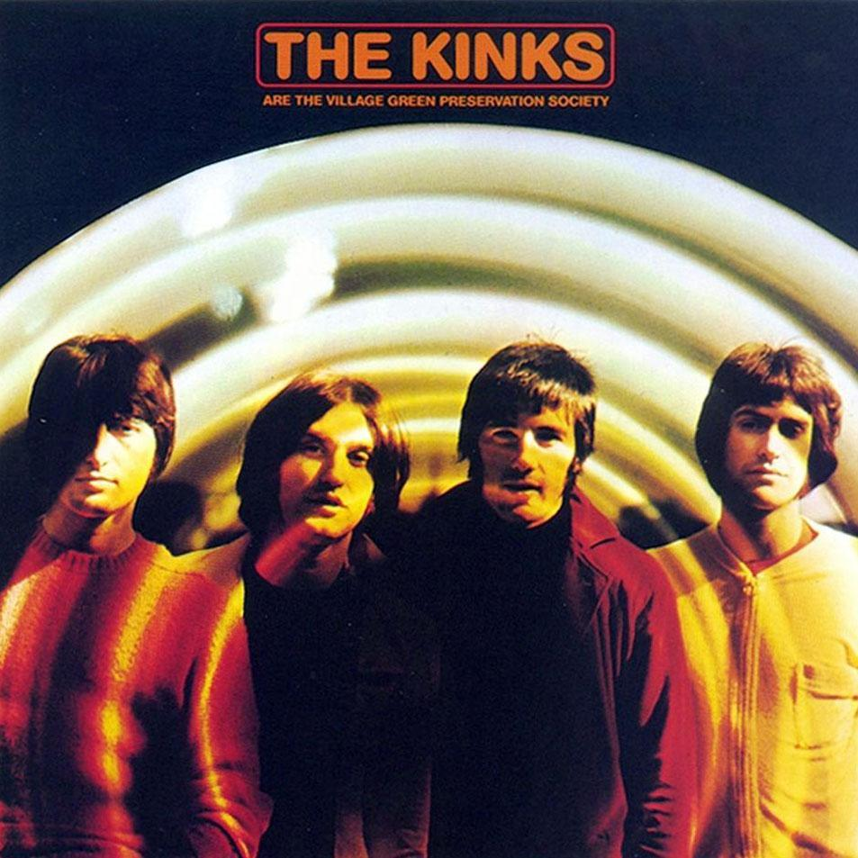

4 min read

This is a rather amazing song by The Kinks, first released in 1968.
I loved this song from the moment I first heard it, but my appreciation for it has only grown over the years.
Consider:
In the same year that John Lennon and Yoko Ono released an album called Two Virgins (certainly using the term to refer to themselves metaphorically, not literally), with an album cover showing the two artists completely naked, Ray Davies wrote a song with the immortal line, “God save little shops, china cups and virginity” (and Davies, to be clear, delivered this line quite seriously and quite literally);
A year before Jefferson Airplane released its album Volunteers, delivering the injunction “Got to revolution,” and noting that “One generation got old, one generation got soul,” Ray Davies was singing “God save the George Cross, and all those who were awarded them”;
Just one year after The Beatles released “Penny Lane,” an endearing song of sentimental childhood nostalgia, Ray Davies fashioned a song that used references to traditional English items, and fading elements of popular culture, not just for a walk down memory lane, but as part of an enduring anthem upholding the value of social continuity.
The lyrics are a treat all on their own, but the music adds a whole 'nother dimension to it, so be sure to listen as well as read.
We are the Village Green Preservation Society.
God save Donald Duck, vaudeville and variety.
We are the Desperate Dan Appreciation Society.
God save strawberry jam and all the different varieties.Preserving the old ways from being abused;
Protecting the new ways, for me and for you:
What more can we do?We are the Draught Beer Preservation Society.
God save Mrs. Mopp and good Old Mother Riley.
We are the Custard Pie Appreciation Consortium.
God save the George Cross, and all those who were awarded them.We are the Sherlock Holmes English-speaking Vernacular.
God save Fu Manchu, Moriarty and Dracula.
We are the Office Block Persecution Affinity.
God save little shops, china cups, and virginity.
We are the Skyscraper Condemnation Affiliates.
God save Tudor houses, antique tables, and billiards.Preserving the old ways from being abused;
Protecting the new ways, for me and for you:
What more can we do?We are the Village Green Preservation Society.
God save Donald Duck, vaudeville and variety.
We are the Desperate Dan Appreciation Society.
God save strawberry jam and all the different varieties.We are the Village Green Preservation Society.
God save Donald Duck, vaudeville and variety.
We are the Desperate Dan Appreciation Society.
God save Donald Duck, vaudeville and variety.God save the Village Green!
Note that the song exhibits many of the same virtues that it extols, being itself small, carefully crafted and unassuming.
There are a number of elements of this song that I find remarkable:
Its emphasis on social unity, created through the repetition of the phrases “We are…” and “God save the…” as well as by the understated, smoothly harmonizing vocals from the band members;
Its emphasis on critical elements of social progress: preserving the old ways, while still protecting the new ways;
Its emphasis on humanizing our society, both by respect for the inexplicable quirks of popular culture, as well as buildings designed for humans, rather than large institutions;
Its emphasis on common action, created through the various different types of organizations cited, and even drawing the listener in through the concluding question, “What more can we do?”
Thematically, the song can easily be thought of as George Santayana set to music. Here are some similar thoughts, from his 1906 work, The Life of Reason: Reason in Common Sense:
Progress, far from consisting in change, depends on retentiveness. When change is absolute there remains no being to improve and no direction is set for possible improvement: and when experience is not retained … infancy is perpetual. Those who cannot remember the past are condemned to repeat it.
The song seems even more relevant today than when it was first released, for several reasons:
Ray Davies and The Kinks certainly recorded a number of great songs, but this one, I think, really stands alone for me. It's hard to think of a comparable song, from any artist, that so calls upon us as listeners to knit together the splintered pieces of our society into a coherent whole that works for all of us.
What more, indeed, can we ask an artist to do?